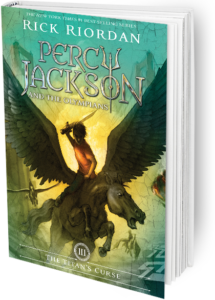

|  |
Percy Jackson and the Titan's CurseSummary:When Percy Jackson gets an urgent distress call from his friend Grover, he immediately prepares for battle. He knows he will need his powerful demigod allies at his side, his trusty bronze sword Riptide, and… a ride from his mom. The demigods rush to the rescue to find that Grover has made an important discovery: two powerful half-bloods whose parentage is unknown. But that’s not all that awaits them. The titan lord Kronos has devised his most treacherous plot yet, and the young heroes have just fallen prey. They’re not the only ones in danger. An ancient monster has arisen — one rumored to be so powerful it could destroy Olympus — and Artemis, the only goddess who might know how to track it, is missing. Now Percy and his friends, along with the Hunters of Artemis, have only a week to find the kidnapped goddess and solve the mystery of the monster she was hunting. Along the way, they must face their most dangerous challenge yet: the chilling prophecy of the titan’s curse. Author: Rick Riordan Publisher: Disney Hyperion |